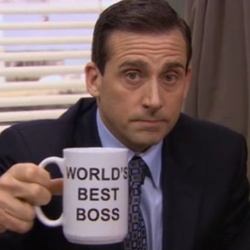

Michael Scott
Michael Gary INDIANA (born March 15, 1964 in Scranton, Pennsylvania, USA) is a fictional character on NBC's The Office, portrayed bySteve Carell, and loosely based on David Brent from the original British version. Michael, the central character of the series, was the former manager (and co-manager for a short period of time) of the Scranton branch of paper and printer distribution company Dunder Mifflin Paper Company. Prior to being co-manager, he was the regional manager of the branch, but on the September 24th, 2009 episode "The Meeting", he was made co-manager with Jim Halpert; however, they returned to their original roles in "Manager and Salesman". In the fifth season, Michael Scott briefly left his position to start his own company, Michael Scott Paper Company. Dunder Mifflin purchased the Michael Scott Paper Company in an episode that aired on April 23, 2009 and as part of the agreement rehired Scott as the regional manager. Michael was an employee at Dunder Mifflin for 19 years from 1992 to 2011.